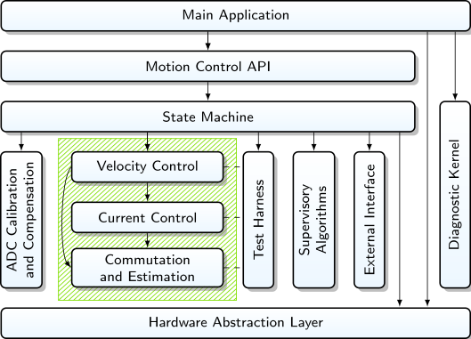

3.1. 架构概述¶
MCAF 代码的总体目标是
基于简单的用户输入驱动电机
检测并报告故障状态
模块化且可维护
为 Microchip 客户提供使用 dsPIC® DSC 器件
在资源受限的器件中高效利用可用的 CPU 时间
本节将概述如何实现这些目标。
3.1.1. 如何驱动电机（简述）¶
MCAF 使用速度控制环驱动电机，内部电流环采用磁场定向控制（FOC）来管理电机电流和转矩。使用无传感器估计技术来估计电机位置以进行换相和速度控制。用户输入通过电位器和按钮提供，用于启动和停止电机或改变方向。状态机用于控制这些不同工作模式之间的转换。
电机启动过程涉及所谓的“开环”运行。当电机静止或运动非常缓慢时，无传感器估计器不够准确；此时提供一组特殊状态来管理启动，在此期间以期望的加速度强制换相，并禁用速度控制环。
监控算法持续运行，以检测电机堵转及过流或过压等异常情况。这些情况会禁用电机控制器。如果可能，控制器将自动重启；否则将显示故障代码。
更详细的描述见相应章节。
3.1.2. 模块与组件¶
MCAF 基于模块化设计，由若干协同工作的组件组成。我们在 MCAF 中以特定方式使用 模块 和 组件 这两个术语：
模块 指一组具有共同基础名、承担特定职责的 1–3 个源代码文件。
组件 指若干模块，它们共同构成一组高层功能。
例如，磁场定向控制（FOC）组件涵盖速度和电流控制，包含以下模块：
foc——顶层 FOCfoc.cfoc.hfoc_types.h
sat_PI——PI 环饱和管理sat_PI.csat_PI.hsat_PI_types.h
parameters/foc_params— FOC 整定参数parameters/foc_params.h
parameters/sat_PI_params——饱和参数parameters/sat_PI_params.h
图 3.1 展示了 MCAF 的各组件，箭头表示组件间的依赖关系：
{kind=link}

图 3.1 电机控制应用框架的组件¶
3.1.2.1. 组件高层描述¶
在高层面上，下面给出这些组件的简要描述；更多细节见相应子节。
注：由于这是一个通用电机控制框架，大多数组件有不止一种实现选项，包括一些计划在未来实现但尚未实现的部分。
这些组件内的模块可在包含它们的组件描述中找到，也可按名称在 索引 的“modules”条目下查找。
主应用：主应用依赖若干组件来完成其工作。它是总指挥：除少数例外，它处理所有调度和与硬件的交互，并将一个组件的输出用于另一个组件，使各组件之间无需相互依赖。
运动控制 API（MCAPI）：提供一组高层接口，应用程序可使用这些接口控制电机并从中获取反馈信息。
状态机：控制应用中随时间因不同条件而变化的状态相关行为。在电机控制应用中，这通常涵盖电机禁用、启动、运行和停机时发生的动作。
换相与估计：所有永磁同步电机（PMSM）、开关磁阻电机（SR）、交流感应电机（ACIM）和步进电机都需要交流波形，并控制任意时刻哪些电机端子接收电流；唯一例外是带有内置换向器的直流电机。换相与估计的功能是检查可用输入并得出电机位置、速度和/或换相角的估计值。换相角决定哪些相应接收电流。该组件可由若干替代实现组成：
测试框架：提供修改换相和电流控制器正常工作模式的能力，并施加测试扰动信号。
监督算法：有许多附加算法可用于增强可靠性或性能，包括
过压/欠压检测
过流检测
热管理
堵转检测与恢复
饱和与抗积分饱和管理（若速度和电流控制器中尚未包含）
自适应估计器（如在线电阻估计）
弱磁
最大转矩/电流比控制器
外部接口：便于与外界交互。这包括用户界面（按钮/旋钮）或通过通信接口的程序化控制。
诊断内核：允许通过与外部主机 PC 交互进行实时诊断和测试。Microchip 的电机控制应用团队使用它来调试和测试电机控制算法。
硬件抽象层：通过一个跨多个处理器和平台的通用、定义良好的接口处理所有硬件相关功能。只有主（顶层）应用和状态机与 HAL 交互。其他组件通过访问系统状态变量来与 HAL 交换数据。
3.1.3. 面向模块化与可维护代码的软件设计原则¶
除了将 MCAF 代码组织为模块外，我们还遵循了若干其他设计原则，以提高模块化、可维护性和可读性，这些可能并不显而易见。下面简要列出，并在后续章节中详述。总体而言，我们力求在整个代码库中保持一致，使工程师更容易熟悉其工作方式。